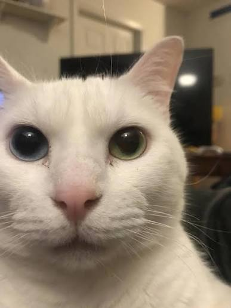

- polish and cleaned up the JS
- made hyperlinks that link to another page work
- formatted the JS into a function, then one loop handles hyperlinks and buttons
- small additions / tweaks
- added stuff to socials page
- made the navButtons be a box that fits the characters, no extra space (also sized up the gap)
- active tab is underlined and highlighted, holding click also highlights
- design change AGAIN
- i typoed the div mainView on purpose to see what it would look like, it looked really good except for a few things
- i thought it looked way better, so i made another styled class called mainViewa and styled it from there, looks much better now and i kept this as a permanent change
Projects Website
Information
What is this website? What is it for?
This website is to show projects I'm working on, and utilities in browser for games, an example being a small Lua compiler.
You can use this page by clicking the buttons above, and to see where I am online, click me.
and the cursor you are using right now: 
Dev Log
- added JS for switching tabs
- bare minimum JS that swaps tabs (also added keyboard support, aka TAB key also highlights the button)
- started the projects section
- cleaned up the CSS
- converted to CSS nesting for readability
- removed redundant rules
- added SEO and polish
- meta description and favicon
- newest dev log entries now go on top
- finally made design better
- changed colors around
- changed borders gaps margins paddings around
- background line design thingy
- recoded this entire website
- better design
- better organization
- more semantic elements rather than divs